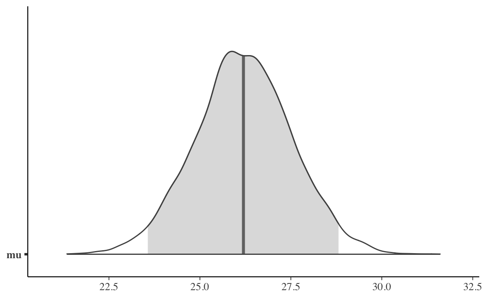

5.4 Stazionarietà
Un punto importante da verificare è se il campionatore ha raggiunto la sua distribuzione stazionaria. La convergenza di una catena di Markov alla distribuzione stazionaria viene detta “mixing”.
5.4.1 Autocorrelazione
Informazioni sul “mixing” della catena di Markov sono fornite dall’autocorrelazione. L’autocorrelazione misura la correlazione tra i valori successivi di una catena di Markov. Il valore \(m\)-esimo della serie ordinata viene confrontato con un altro valore ritardato di una quantità \(k\) (dove \(k\) è l’entità del ritardo) per verificare quanto si correli al variare di \(k\). L’autocorrelazione di ordine 1 (lag 1) misura la correlazione tra valori successivi della catena di Markow (cioè, la correlazione tra \(\theta^{(m)}\) e \(\theta^{(m-1)}\)); l’autocorrelazione di ordine 2 (lag 2) misura la correlazione tra valori della catena di Markow separati da due “passi” (cioè, la correlazione tra \(\theta^{(m)}\) e \(\theta^{(m-2)}\)); e così via.
L’autocorrelazione di ordine \(k\) è data da \(\rho_k\) e può essere stimata come:
\[\begin{align} \rho_k &= \frac{\Cov(\theta_m, \theta_{m+k})}{\Var(\theta_m)}\notag\\ &= \frac{\sum_{m=1}^{n-k}(\theta_m - \bar{\theta})(\theta_{m-k} - \bar{\theta})}{\sum_{m=1}^{n-k}(\theta_m - \bar{\theta})^2} \qquad\text{con }\quad \bar{\theta} = \frac{1}{n}\sum_{m=1}^{n}\theta_m. \tag{5.2} \end{align}\]
Per fare un esempio pratico, simuliamo dei dati autocorrelati con la funzione R colorednoise::colored_noise():
suppressPackageStartupMessages(library("colorednoise"))
set.seed(34783859)
rednoise <- colored_noise(
timesteps = 30, mean = 0.5, sd = 0.05, phi = 0.3
)L’autocorrelazione di ordine 1 è semplicemente la correlazione tra ciascun elemento e quello successivo nella sequenza. Nell’esempio, il vettore rednoise è una sequenza temporale di 30 elementi. Il vettore rednoise[-length(rednoise)] include gli elementi con gli indici da 1 a 29 nella sequenza originaria, mentre il vettore rednoise[-1] include gli elementi 2:30. Gli elementi delle coppie ordinate dei due vettori avranno dunque gli indici \((1, 2), (2, 3), \dots (29, 30)\) degli elementi della sequenza originaria. La correlazione di Pearson tra i vettori rednoise[-length(rednoise)] e rednoise[-1] corrisponde dunque all’autocorrelazione di ordine 1 della serie temporale.
cor(rednoise[-length(rednoise)], rednoise[-1])
#> [1] 0.3967366Il Correlogramma è uno strumento grafico usato per la valutazione della tendenza di una catena di Markov nel tempo. Il correlogramma si costruisce a partire dall’autocorrelazione \(\rho_k\) di una catena di Markov in funzione del ritardo (lag) \(k\) con cui l’autocorrelazione è calcolata: nel grafico ogni barretta verticale riporta il valore dell’autocorrelazione (sull’asse delle ordinate) in funzione del ritardo (sull’asse delle ascisse). In \(\R\), il correlogramma può essere prodotto con una chiamata a acf():
acf(rednoise)
Il correlogramma precedente mostra come l’autocorrelazione di ordine 1 sia circa pari a 0.4 e diminuisce per lag maggiori; per lag di 4, l’autocorrelazione diventa negativa e aumenta progressivamente fino ad un lag di 8; eccetera.
In situazioni ottimali l’autocorrelazione diminuisce rapidamente ed è effettivamente pari a 0 per piccoli lag. Ciò indica che i valori della catena di Markov che si trovano a più di soli pochi passi di distanza gli uni dagli altri non risultano associati tra loro, il che fornisce conferma del “mixing” della catena di Markov, ossia di convergenza alla distribuzione stazionaria. Nelle analisi bayesiane, una delle strategie che consentono di ridurre l’autocorrelazione è quella di assottigliare l’output immagazzinando solo ogni \(m\)-esimo punto dopo il periodo di burn-in. Una tale strategia va sotto il nome di thinning.
5.4.2 Test di convergenza
Un test di convergenza può essere svolto in maniera grafica mediante le tracce delle serie temporali (trace plot), cioè il grafico dei valori simulati rispetto al numero di iterazioni. Se la catena è in uno stato stazionario le tracce mostrano assenza di periodicità nel tempo e ampiezza costante, senza tendenze visibili o andamenti degni di nota. Un esempio di trace plot è fornito nella figura 5.8 (destra).
Ci sono inoltre alcuni test che permettono di verificare la stazionarietà del campionatore dopo un dato punto. Uno è il test di Geweke che suddivide il campione, dopo aver rimosso un periodo di burn in, in due parti. Se la catena è in uno stato stazionario, le medie dei due campioni dovrebbero essere uguali. Un test modificato, chiamato Geweke z-score, utilizza un test \(z\) per confrontare i due subcampioni ed il risultante test statistico, se ad esempio è più alto di 2, indica che la media della serie sta ancora muovendosi da un punto ad un altro e quindi è necessario un periodo di burn-in più lungo.